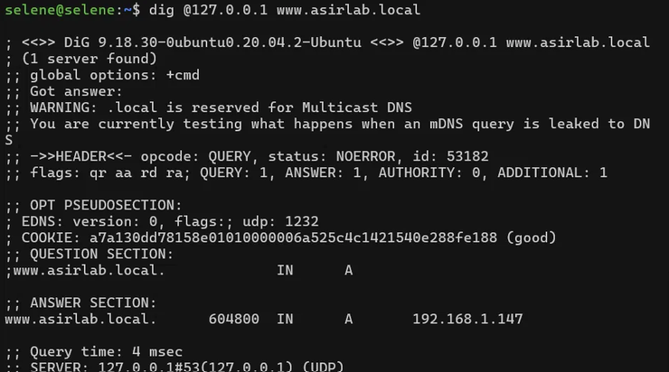
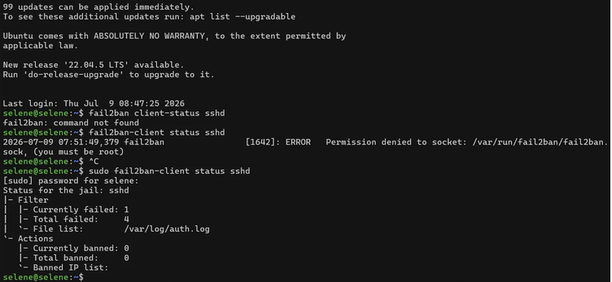
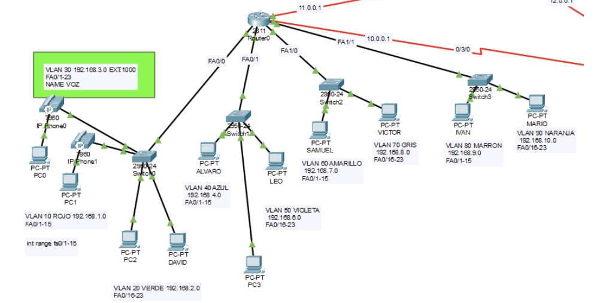

nodo seleccionado
Cortafuegos / Gateway
Ubuntu Server
El corazón del laboratorio de bastionado.
- capa
- L3/L4
- rol
- UFW · Fail2Ban · SSH bastionado
02 — laboratorio
Una selección de prácticas, laboratorios y proyectos personales desarrollados durante mi formación en Administración de Sistemas Informáticos en Red (ASIR), incluyendo mis ideas y esbozos de proyectos para los próximos meses. El código y las configuraciones están en mi GitHub: github.com/selenepasek.
Levantar un servidor que resuelva nombres de dominio locales (DNS) y asigne direcciones IP automáticamente a los clientes de la red (DHCP), simulando la infraestructura básica de una red corporativa.
Port Group dedicado en ESXi e IP estática configurada mediante Netplan.
Zona local asirlab.local con registros A para ns y www, declarada en /etc/bind/named.conf.local y /etc/bind/db.asirlab.local.
Rango 192.168.1.200–220, puerta de enlace 192.168.1.1, DNS entregado a los clientes 192.168.1.147 (el propio servidor) y dominio asirlab.local.

dig: la zona responde y www.asirlab.local resuelve a 192.168.1.147 en 4 ms.
topología del laboratorio · pulsa un nodo
nodo seleccionado
Ubuntu Server
El corazón del laboratorio de bastionado.
esperando — pulsa «seguir la ruta».
✦ destino alcanzado en 5 saltos

/var/log/auth.log: cuatro intentos fallidos registrados y ninguna IP baneada todavía.
Tres routers Cisco 2811 interconectados mediante enlaces serie en subredes /30 (11.0.0.0, 12.0.0.0 y 10.0.0.0) para gestionar el tráfico entre sedes y el enrutamiento inter-VLAN.
Segmentación dedicada para el tráfico de voz a través de VLANs específicas (30, 40 y 110), asociadas a los rangos de extensiones 1000, 2000 y 3000.
Múltiples VLANs para organizar el tráfico por departamentos (CUENTOS, ENSAYOS) y por delegaciones territoriales.

iot · hardware
Dispositivo ultraportátil para almacenar y visualizar datos de salud personales, con hardening tanto en el firmware como en el hardware.
posible TFG de ASIR
Un SIEM ligero para centralizar, ingerir y analizar los logs que generan los dispositivos de red, los servidores Linux y Windows y los contenedores. Estoy profundizando en parsing para poder escribir scripts más funcionales.
auditoría
Desplegar una infraestructura corporativa simulada con Windows Server (Active Directory y GPOs) y realizar una auditoría de seguridad completa desde Kali Linux, para evaluar los fallos de configuración más habituales en empresas.